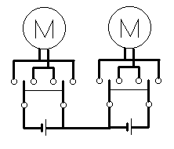
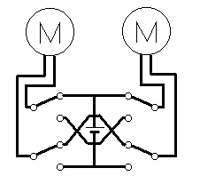

かならずお読みください→
ジャイアントクレーンの改造
ジャイアントクレーンは，DICKIE社のおもちゃです．トイザらス富山店で購入しました．
写真のようにいかにも子供がすきそうな大きなおもちゃです．
標準では左の写真のようなコントローラが付いています．
左の上下に動くレバーで、クレーンのフックを上下に，
右の左右に動くレバーで左右に旋回させます．
ところが、このコントローラを使いこなせない場合もあるそうです．そこでこのおもちゃに対して
前後左右に動くジョイスティックで操作する．
外部スイッチで操作する．
ように改造しました．
材料
三和電子（株）， ジョイスティック（JFL-TM-8），１個，参考価格4200円 直接買えばもっと安い
（購入先，（株）横山商会富山営業所，TEL：076-423-8500）
三和電子（株） 〒173-0034 東京都板橋区幸町２０－１５
TEL：03-3959-6611(代) E-mail;sanwa3@mb.infoweb.ne.jp http://www.sanwa-d.co.jp/（通販あり）
秋葉原の千石電商、アイコー電子などいくつかの店で扱っているらしい．
千石電商は通信販売もしているらしい．
（株）千石電商 千代田区外神田１－８－５ TEL：03-3253-4411
（株）タカチ電機工業，ＴＳ型傾斜ボックス（TS-2），１個，参考価格1460円
（購入先，マイコンビル無線パーツ富山店）
コネクタ類
ヒロセ電機，プラグ（HR10A-7P-4P），１個，参考単価680円
ヒロセ電機，レセプタクル（HR10A-7R-4S），２個，参考単価320円
ヒロセ電機，ジャック（HR10A-7J-4S），１個，参考単価740円
補足：これらのコネクタは単に手持ちの部品を使っただけです．要は４本の配線をつなげるコネクタであれば他の種類でもかまいません．
サトーパーツ，ＵＳ型ジャック（PJ-2240-J），４個，参考単価100円
（以上コネクタ類，購入先，（株）横山商会富山営業所，076-423-8500）
その他電子パーツ店などで入手可能です．
参考：これは，直径3.2mmの２極ジャックです．ジェリービーンスイッチなどはそのまま使えます．このジャックに対応するプラグは，サトーパーツ，US型プラグ（PJ-2240-P）参考単価100円です．スイッチを製作する場合にはこれをつかいます．
オムロン，マイクロリレー（形G5V-1，5V），４個，参考単価230円 （技術資料はここから入手可能）
（購入先，（株）電陽社富山営業所，TEL：076-432-7588）
電池ボックス，単１二本用，１個，単３四本用，１個，各100円位
（購入先，マイコンビル無線パーツ富山店）
その他，ネジ類，汎用基盤，電線など小物部品
工具
ドリル，はんだごて，ハンダ，ドライバ，ヤスリ，テスタなど
作業手順
１ 回路について

回路を見るためにオリジナルのコントローラを分解して見ました．それが上図です．
回路的にはごく簡単なものでしたが，スイッチに特色がありました．（双極双投，常時閉路とでも呼ぶのでしょうか？ ON-OFF-ON で中立に保持されます．）上のまるにＭはモータです．スイッチの操作で，正転／逆転します．乾電池は単三電池を４本使っています．（図では簡略化しています）このモータは３Ｖで動くようです．
回路図に書いてしまえば簡単ですが，実際にごく少ない簡単な部品で作られていました．
確かに耐久性があるようには見えませんが，機能的には満足しています．おもちゃといえども侮れません．
次に改造に使用する，三和電子（株），ジョイスティック（JFL-TM-8）は，１Ｃタイプのスイッチを４個使ったものですので，上と同じ回路を構成できません．

そこで，上図のような回路としました．この回路では，例えば上に動かすスイッチと下に動かすスイッチを同時に閉じても過大な電流が回路に流れません．ここで使用するジョイスティックでは，このようにモーターを反対向きに同時に動かす操作は，機構的にできませんので，もっと簡単な回路でもよいと思います．
しかし，外部スイッチで操作する場合は，このような問題が起こる可能性が十分あります．よって，上の回路を元にして下の回路を作りました．
外部スイッチでリレーを動かし，モーターを操作する回路です．上の回路のスイッチ部分をリレーに置き換えました．基本的には図のようにダイオードを入れますが，今回の場合はなくてもよいようです．
２ 組み立て作業について
ボックスに部品を組み込む前に，仮の配線をして動作を確認します．その後ユニットごとにボックスに組み込んでいくのがよいでしょう．ボックスの穴明け作業などの説明は，ここでは省略します．
ジョイスティックに配線している途中の写真です．
リレー関係はユニバーサル基盤にまとめました．左と下の黒いコネクタはおごりすぎ？
ボックスに組み付けたところです．
左の単一電池は，ジャイアントクレーンのモータ駆動用です．電池交換がもつように単一にしました．
右の単三電池は，リレー駆動用です．リレーの定格は５Ｖですが，電池がもつように４本使用しています．（多分大丈夫でしょう）
ボックスが大きめですから，レイアウトにはほとんど苦労しません．ただ単一電池とジョイスティックが干渉するため，ジョイスティックを若干右に寄せて取り付けています．
ケース背面の写真です．
背面にあるコネクタは，左の４個が，サトーパーツ，ＵＳ型ジャック（PJ-2240-J）．右の２個がヒロセ電機，レセプタクル（HR10A-7R-4S）です．ジャイアントクレーンにつながる配線は，下の写真のように，クレーン側にヒロセ電機，プラグ（HR10A-7P-4P）をつけ，下の写真のようにジョイスティックで操作する場合は右に，外部スイッチで操作する場合は左に差し込んで使用します．
オリジナルの操作ボックスを改造しました．操作ボックス側には，ヒロセ電機，ジャック（HR10A-7J-4S）をジャイアントクレーン側には，ヒロセ電機，プラグ（HR10A-7P-4P）をつけ，写真では組み合わせています．これでオリジナルのままでも使用できます．
３ 外部スイッチについて
一番上の写真では，ジェリービーンスイッチをつけていますが，一番工夫の必要な部分が外部スイッチです．おもちゃを使う人に合わせて選ぶ必要があり，場合によっては特注品や自分で製作することも必要かもしれません．
今回使用した，サトーパーツ，ＵＳ型ジャック（PJ-2240-J）は，多くの市販スイッチに対応しています．自作する場合もサトーパーツ，ＵＳ型プラグ（PJ-2240-P）などを使用するとスイッチの使い回しが可能になります．
予測される危険性
このような改造をすると多くの場合，メーカ保証の対象から除外されます．故障しても修理してもらえなくなることを覚悟してください．
特に取り扱いが難しい部品もありませんし，感電するような電圧もありません．ハンダこてでやけどしないように気をつけるくらいでしょう．
何がどうこわれても，ジャイアントクレーンが動かなくなるだけです．最悪の場合でもかけたお金と時間が無駄になるだけです．
ひとこと
ここで紹介したジャイアントクレーンは，全国どこでも入手できるおもちゃではないと思います．しかし単純なわりに遊び方を色々工夫できるよいおもちゃだと思います．とかく飽きやすい子供相手にはこれが大切なことのようです．
今回ご紹介したような方法は，いろいろなものに応用できると思います．興味をお持ちの方は，トライしてみてください．大切なことは，原理を理解し，それを他の方法で実現することです．
03/05/15 公開
研究企画課リハ工学科にもどる